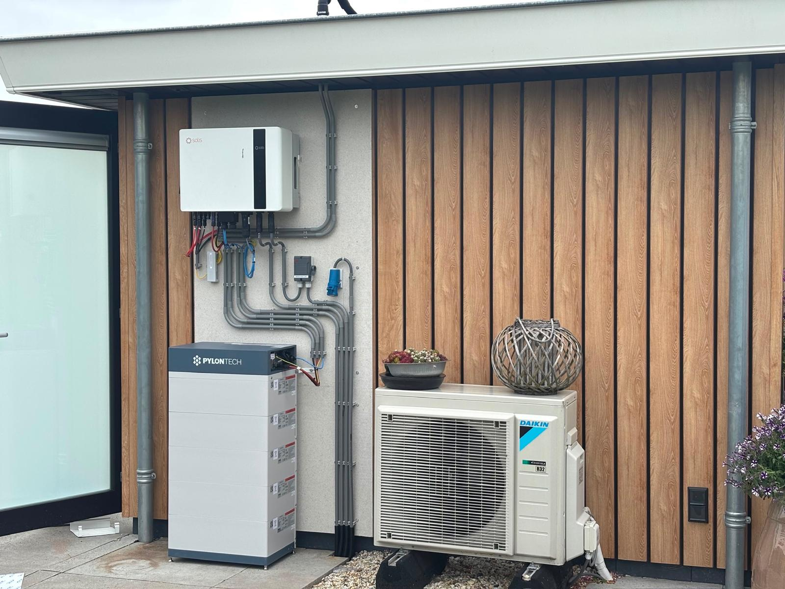

Opslaan
Met een thuisbatterij gebruik je de stroom van vandaag vanavond zelf: meer eigen verbruik, minder terugleverkosten en licht in huis bij een stroomstoring. Benieuwd wat voor een batterij bij u zou passen? Vraag dan direct om gratis advies via de knop hieronder.

Thuisbatterij
Perfecte manier om verloren zonnestroom op te slaan en te gebruiken wanneer de zon er niet meer is. Eventueel modulair uitbreidbaar, zodat er altijd mogelijkheid is tot uitbreiding. Ons EMS-systeem bepaalt automatisch wanneer laden en ontladen het meest oplevert — Jullix rekent dat per kwartier uit en herberekent het plan elk uur opnieuw, zodat de batterij precies op het juiste moment schakelt tussen balanceren, piekscheren, opladen of ontladen.
Noodstroom
Met onze noodstroominstallatie schakelt je huis bij een stroomuitval automatisch over op je eigen opgeslagen energie. Zo blijven de belangrijkste groepen werken: verlichting, koelkast, router en cv. Dat is bovendien per persoon aan te passen.
Wat we plaatsen
Welke batterij bij je past hangt af van je verbruik, je dak en wat je later nog wilt aansluiten. Dit is waar we mee werken.
We leveren en installeren thuisbatterijen van Pylontech, GoodWe, Huawei, Bliq en Goshion. Welk merk het wordt, kiezen we op basis van je situatie: de ruimte in je meterkast of garage, de omvormer die er al hangt, of je noodstroom wilt en hoeveel je later nog wilt bijplaatsen. Voor onderhoud en storingen werken we daarnaast met alle merken batterijen, ook systemen die door iemand anders zijn geplaatst.
We leveren vanaf 5 kWh, en de meeste systemen zijn modulair: je begint met wat je nu nodig hebt en zet er later een module bij als je verbruik verandert — bijvoorbeeld als er een elektrische auto of een warmtepomp bij komt. Een batterij die te groot is voor je verbruik verdient zichzelf niet terug; een die te klein is, staat elke zomeravond leeg. Daarom rekenen we het door op basis van je werkelijke jaarverbruik voordat we een maat noemen.
Nu de salderingsregeling wordt afgebouwd, is teruggeleverde stroom steeds minder waard en betaal je bij veel leveranciers terugleverkosten. Een batterij draait dat om: wat je overdag opwekt en niet gebruikt, gaat de batterij in en komt er 's avonds weer uit. In combinatie met een dynamisch contract kan het systeem bovendien laden wanneer stroom goedkoop is en ontladen wanneer hij duur is.
Noodstroom
Een gewone thuisbatterij valt bij een stroomstoring gewoon mee uit. Met een noodstroominstallatie erbij niet.
Bij een stroomuitval schakelt de installatie binnen een tiende seconde over op je eigen opgeslagen energie. Dat is snel genoeg dat je computer niet uitvalt en je cv niet opnieuw hoeft op te starten — in de praktijk zie je hooguit de lampen even knipperen.
Welke groepen doorlopen, bepaal je zelf. De meeste mensen kiezen verlichting, koelkast en vriezer, de router en de cv-ketel. Wil je er de oven of de wasmachine bij, dan kan dat ook — het is een kwestie van hoe lang je met je batterij wilt doen. We leggen bij de intake uit wat elke keuze betekent voor hoe lang je het uithoudt.
Wij zitten niet vast aan één merk noodstroomsysteem: we kiezen wat past bij de batterij en de meterkast die er staan. Overdag vult de zon de batterij intussen gewoon weer aan, dus bij een storing die een dag duurt, houd je het vol.
Binnen een tiende seconde over op je eigen stroom — en jij bepaalt wat er doorloopt.
FAQ
Dat rekenen we uit op basis van je jaarverbruik en wat je panelen opwekken. We leveren vanaf 5 kWh en de meeste systemen zijn modulair, dus je kunt later bijplaatsen als je verbruik verandert.
Alleen met een noodstroominstallatie erbij — een gewone thuisbatterij valt bij een storing mee uit. Met noodstroom schakelt het systeem binnen een tiende seconde over en bepaal je zelf welke groepen doorlopen: verlichting, koelkast, router, cv.
Meestal wel, ook als de panelen door iemand anders zijn gelegd. Het hangt af van de omvormer die er hangt; soms is het slimmer die tegelijk te vervangen. We kijken eerst in je meterkast voordat we iets voorstellen.
Ja, voor onderhoud en storingen werken we met alle merken batterijen, ongeacht wie het systeem heeft geplaatst.
Jullix is het energiebeheersysteem dat beslist wanneer laden, ontladen of doorleveren het meest oplevert — op basis van je opwek, je verbruik en de actuele prijzen. Zonder zo'n systeem doet een batterij niet meer dan opslaan wat er over is.
Jullix Optimizer V7 plant per kwartier (15 minuten) vooruit en herberekent dat plan elk uur opnieuw, zodat het systeem continu inspeelt op actuele stroomtarieven en injectievergoedingen. Daarbinnen schakelt het automatisch tussen zeven modi:
Je hoeft zelf niets in te stellen: Jullix kiest per kwartier automatisch welke modus op dat moment het meest oplevert. Meer over Jullix.
Bekijk alles wat we voor woningen doen, of lees over batterijopslag voor bedrijven.